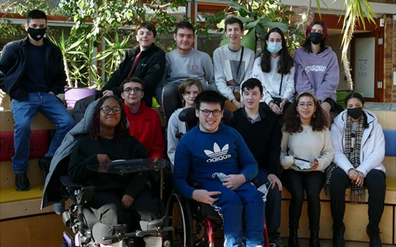

Elie Vignal, une solution pour mieux apprendre autrement ?

Aujourd’hui, dans un certain nombre d’handicaps, il est compliqué d’envisager une scolarisation dans un environnement dit “normal”.
En région Lyonnaise, se trouve un établissement particulier permettant d'accueillir des élèves en situation de handicap sans déficience intellectuelle, qui ne peuvent pas ou difficilement apprendre dans un environnement normal.
Une école adaptée : Immersion à Elie Vignal
Comme nous le confiait une ancienne élève de cet établissement, cet établissement est très aidant car il permet un accompagnement bien plus présent que dans un établissement normal, du fait des effectifs réduits notamment. Cela leur permet également de pouvoir mieux adapter leurs cours et leurs façon de faire face aux difficultés et aux sensibilités de chacun. Selon cette même élève “Être à Elie Vignal m’a permis de reprendre goût d’aller à l’école et de pouvoir passer mon BAC avec les aménagements qu’il faut.”
Selon un autre élève, Elie Vignal n’était pas la solution miracle mais il avait je cite “bien conscience que cela ne pouvait pas être mieux au vu de ses problèmes de santé”.
Au sein de la cité Elie Vignal, on peut également trouver un AESH par classe ou presque, ce qui permet une prise de note pour ceux qui ne sont pas en capacité de le faire. Une infirmière est aussi présente sur place pendant toute la semaine afin de pouvoir garantir les soins récurrents. Des salles sont mises à dispositions pour d’éventuels professionnels de santé, afin de permettre aux élèves de ne louper le moins de cours possible à cause de soins.
Des projets personnalisés sont également faits tous les ans pour chacun de la centaine d’élèves de l’établissement. Cela permet de déterminer l’évolution de l’élève, les éventuels aménagements à mettre en place ainsi que la possibilité ou non de réintégrer ou non lors de la rentrée suivante un établissement normal.
Un exemple d’inclusion réussie, mais encore rare
Dans notre monde d’aujourd’hui, il est important de rappeler qu'en France, 80 000 enfants en situation de handicap seraient sans solution viable en France, d’après l’UNAPEI. Il reste encore beaucoup de travail d’autant que même dans le petit demi-million d'élèves en situation de handicap scolarisé, beaucoup sont maltraités par le système, dans des conditions d’apprentissage peu probantes.
La cité scolaire Elie Vignal reste donc essentielle et la création de nouvelle structure comme cette dernière permettrait de réduire considérablement le nombre de jeunes sans solution !